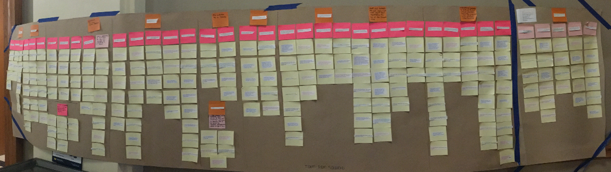

umich school of information masters student | intern for hire
Umich Center For Sustainable Systems
I worked with two of my fellow students for a semester performing an in-depth audit of the resource organization system at the University of Michigan's Center for Sustainable Systems using contextual inquiry. We performed planned interviews with staff and researchers, collected affinity notes, made an affinity wall (seen in the image above), and performed formal analyses to identify the center's real organizational issues and make insightful, innovative recommendations for the center to implement.
You can read our final recommendations here
You can see a presentation on these recommendations here